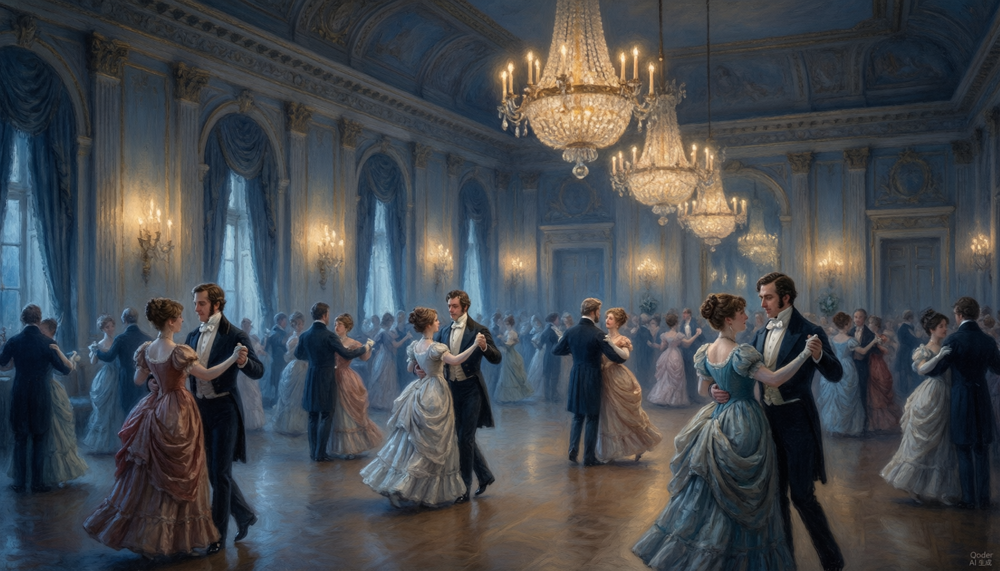
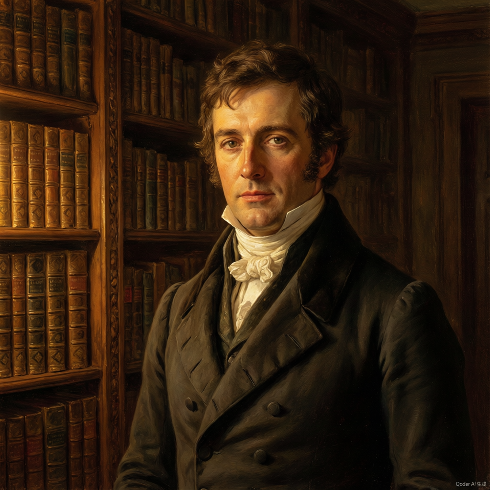

一本关于误会的书。
也是一个关于「看人」的故事。
人人都说这是一部爱情经典。
但我们这次，想从爱情以外的角度打开它。
读《傲慢与偏见》的时候，读到某个时刻我突然意识到——这些人，我认识。
那个嘴上不饶人但其实心里很在乎的姑娘，我认识。那个明明很善良却不知道怎么表达的男生，我也认识。甚至那个一开口就让人尴尬、自以为是的牧师，我也在某次聚餐里遇到过。
故事从一句话开始。达西先生在舞会上说："她还没有漂亮到能打动我的程度。"而那个姑娘，偏偏把这句话记得清清楚楚。
故事从这里就开始了——不是从爱情开始，而是从伤害开始。
伊丽莎白是那种让人喜欢的姑娘。聪明、机灵、嘴巴厉害，最难得的是她有主见。在那个女人只需要嫁个好人家的年代，她偏偏要说：如果遇不到让我尊重的人，我宁可一个人待着。
我读到这里的时候特别佩服她。觉得她活得太清醒了。
然后奥斯汀笔锋一转——让这个最清醒的人，犯了最糊涂的错误。
军官韦翰出现了。英俊、健谈、身世可怜。他说达西抢走了本该属于他的牧师职位，说他被亏待了。伊丽莎白几乎没犹豫就相信了他。为什么？因为韦翰说的话，跟她已经形成的判断完全吻合——达西嘛，本来就是那种傲慢的人，做出这种事不奇怪。
后来我才知道，心理学上有个词叫"确认偏误"。就是说，一旦我们心里有了一个结论，就会不自觉地去找证据来支持它，而自动忽略那些不支持它的信息。
读到这一段的时候，我心里"咯"了一下。因为我想到自己——有多少次，我以为自己在"理性判断"，其实只是在"找证据"？
面试的时候，因为候选人简历上某个细节不满意，后面整场面试都在找"他不行"的证据。跟同事合作，因为第一次沟通不顺畅，就给人贴了个"不好合作"的标签。
伊丽莎白让我害怕的地方不是她犯了错，而是她犯错时的那种笃定。那种"我一看就知道"的自信——恰恰是偏见最危险的伪装。
说说达西。
如果只看前半本书，达西简直是个反派。有钱有地位，但目中无人。在舞会上挑三拣四，对不认识的人爱答不理。跟伊丽莎白说话的时候，语气里总带着一种"你不懂"的优越感。
但后来我慢慢发现一件事：达西不是不在乎，他是不知道怎么在乎。
冷漠、傲慢、看不起所有人。在舞会上拒绝跳舞，对班纳特一家嗤之以鼻。
他看起来像是一个不需要任何人的人。
暗中替莉迪亚还债，保全了班纳特家的名声。默默帮助宾利认清自己的感情。为伊丽莎白做了一切，却不让她知道。
他其实是一个做了很多好事、却从不开口的人。
我身边也有这样的"达西"。那个从不主动打招呼的同事，后来我才知道他每次项目上线前都偷偷检查彼此的代码。那个看起来高高在上的领导，其实私下帮团队挡了很多来自上层的压力。
我们太习惯用"会不会说话"来判断一个人了。一个不善表达的人，很容易被贴上"冷漠"的标签。但冷漠和笨拙，是两回事。
达西的"傲慢"，其实是一种保护色。他从小被教导要与人保持距离，久而久之，距离就变成了别人眼中的傲慢。我们生活中有多少"达西"，不是看不起你，而是不知道怎么走向你？

全书最打动我的，不是达西的求婚。是伊丽莎白读完达西那封信之后的那段独白。
达西早就爱上伊丽莎白了。可他第一次求婚说的是："我已经忍得够久了。"又说："我明知道你的家世配不上我。"他说的全是真心话，可他用的是"我在向下兼容你"的语气——把爱说成了施舍。
伊丽莎白一句话就把他堵了回去："你是这世上我最后一个愿意嫁的人。"
「我这一生都是个自私的人——实践上是，原则上却不是。」
— 达西致伊丽莎白但真正改变一切的，是后来那封信。信里，他一条一条地解释了真相。韦翰是个骗子。他承认自己确实傲慢，也承认自己拆散了简和宾利的姻缘。这封信没有姿态，只有证据和认错。
伊丽莎白读了两遍，哭了。她第一次开始怀疑自己：也许，我一直都在误会他？
注意，她是先怀疑自己，才看见真相的——顺序很重要。
一个人能说出"我可能错了"，
需要的不是软弱，
而是巨大的勇气。
伊丽莎白最了不起的地方，不是她聪明，不是她有主见。而是她在发现自己错了之后，没有找借口，没有转移话题，而是直面了它。
这一点，比整本书里任何一个情节都让我印象深刻。
那封信之后，故事急转直下。
伊丽莎白最冲动的妹妹莉迪亚，被韦翰几句花言巧语骗得私奔了。在那个名声就是一切的年代，这等于把全家推到悬崖边——姐姐们的婚事全得泡汤，整个家族的社会地位彻底崩塌。
可就在这时候，出手的人是达西。他找遍伦敦，替韦翰还清债务，逼他娶了莉迪亚，甚至亲自出席了那场难堪的婚礼——然后，他不许任何人说。
伊丽莎白辗转知道真相的那一刻，彻底震惊了：那个她骂了半本书的"傲慢的人"，在她全家最不堪的时候，做了最善良、最体面、也最不邀功的事。
后来她来到达西的庄园。她以为会看到浮华，可她听见的是管家如何由衷敬重他、佃户如何真心信任他、他对自己的妹妹有多疼爱。在那个讲究出身的年代，达西对她那位出身不算体面的舅舅礼貌而得体——那不是礼貌，是人品。
一个人的品格，藏在他怎么对待那些与他无关的人身上。他对服务员、对下属、对家人——那些没有利益的地方，才是他真实的样子。
真正的善意，常常是无声的。愿意为你做事的人很多；愿意为你做事、还不让你有负担的人，才难得。
达西的姨母凯瑟琳夫人深夜闯上门，命令伊丽莎白发誓永远不嫁给达西，理由是：你家家世配不上他。
伊丽莎白没有退缩。她平静地回敬："他是个绅士，我是个绅士之女——论身份，我们平等。"
最讽刺的是：老太太这一闹，反而让达西确信伊丽莎白心里有他。他第二次求婚——这一次，他没有再用身份压她，只是平平静静地站到她面前。
「直到此刻，我才真正了解自己。」
— 伊丽莎白他说：「我这一生都是个自私的人——实践上是，原则上却不是。」
她也终于承认：「直到此刻，我才真正了解自己。」
书里没有王子救公主。这是两个都曾看错彼此的人，学会了诚实地看人、也谦卑地看己之后，才走到了一起。
人们都以为，这本书讲的是我怎么爱上达西。可真正改变我的，不是爱情，而是我终于承认：我可能看错了人。而且错得很笃定。
我这一生最骄傲的，是我的判断力；我最致命的，也是它。
壹 · 舞会第一眼，达西傲慢、冷面、拒人于千里之外。我只看了他一眼，就认定他难相处，从此他做什么都顺理成章地"印证"我的判断——反正我认定了。
后来我才知道，那不是他在舞会上的样子，那是我那时候的样子。我带着偏见看人，于是只看得见偏见。
第一印象是用来记住的，不是用来宣判的。
韦翰一开口，人人都想信他。他风趣、自嘲、合情合理。我差点毁在对他的一见如故上。而我一度最看不上的达西，却在我不为人知的狼狈里，默默替我做了所有事。会说话，跟可靠，从来不是一回事。
叁 · 守住自己我拒绝达西，不是因为不爱，而是因为我不能接受被人看低。我可以爱，但我不能为此丢掉自己的分量。夏洛特选了安稳，莉迪亚信了冲动，我选了守住自己。哪一种都不完美，但至少我得为自己负责。
肆 · 看清自己达西说："我这一生都是个自私的人——实践上是，原则上却不是。"我笑他，然后又笑自己：谁不是"原则说得漂亮，实践却做不到"？
成长最难的，不是学新东西，而是承认自己看错了、做错了、还改得动。
第一印象是用来记住的，不是用来宣判的。
怎么说，往往比说什么更致命。
③ 会说话 ≠ 可信；看他做什么。
④ 守住自己的分量，再去爱。
⑤ 承认看错了，才是成长的开始。
人们都以为，我是那个傲慢的人。可真正困住我的，不是别人怎么看我——是我怎么把自己看得太高，又太怕被人看轻。
壹 · 开口第一次求婚，我用了"我已经忍得够久了"这样的措辞。我说的是真心，姿态却像在俯就。她回我："你是这世上我最后一个愿意嫁的人。"那一刻我才明白——把对方看低，是爱里最昂贵的错误。
My good opinion once lost, is lost forever.
「我的好意，一旦失去便永不回头。」可我不曾想过——她凭什么要我的"好意"，还要先领我的情？
后来我写了一封信，把事实一条条讲清楚——没有姿态，只有证据。她读信时才开始想：也许她一直误会了我。原来让人信服的，从来不是气势，是真相本身。
叁 · 做事莉迪亚私奔、她全家蒙羞。我悄悄出钱替他们摆平了这一切，几乎不邀功。那一刻我懂了：在她最狼狈的时候，替她守住体面；也是在做完这些后，平静地退开。
肆 · 平等第二次求婚，我没有再用身份压她，只是平等地站到她面前。我不需要她配得上我，我只需要她愿意。那一刻我才真正长大——不再需要向谁证明自己更强。
① 别让骄傲，替你挡住那个真正对你好的人。
② 把对方看低，是爱里最昂贵的错误。
③ 真诚，是撤回那些让你高高在上的姿态。
④ 承认自己错了，比证明自己对了更难，也更值得。
读完这本书，我最大的感受是：奥斯汀写的不是19世纪的英国，她写的是此刻的我们。
达西花了整本书的时间去修复第一印象。韦翰靠第一印象骗了所有人。我对一个人的第一印象，到底有多少是"事实"，有多少是"我的心情"？别急，让时间说话。
好的感情不是找到一个完美的人，而是因为那个人，你想变成一个更好的人。达西因为伊丽莎白学会了表达，伊丽莎白因为达西学会了审慎。
"做了"和"被知道做了"之间，有一条很重要的沟。你以为的"低调"，在别人眼里可能就是"冷漠"。不是说要炫耀，而是要学会沟通。
家庭给孩子最好的东西，不是物质条件，而是让他们看到两个人怎么好好相处。莉迪亚的放纵、简的天真、伊丽莎白的过度独立——都能在父母身上找到影子。
数据说服大脑，故事打动人心。不管是做汇报、做产品还是做个人品牌，"故事感"永远比"信息量"更有力量。
说到底，这本书教会我最重要的一件事是——
成长的起点不是"我要变得更好"，
而是"我承认现在不够好"。
非常确信自己看对了人，结果完全搞错了。后来发生了什么？
其实不是看不起对方，只是不知道怎么表达善意。你是怎么处理的？
如果是你，你会怎么选？有没有第三条路？
我们每天看到的信息都在印证已有的观点——怎么打破这个循环？